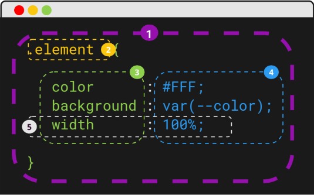

CSS (Cascading Style Sheets) és un llenguatge de fulles d’estil que s’utilitza per controlar la
presentació i el disseny dels documents web escrits en HTML. Mentre que HTML proporciona
l’estructura del contingut, CSS defineix com s’ha de visualitzar aquest contingut en termes de
disseny, colors, tipografia, espaiat i posicionament dels elements en una pàgina.
Importància del CSS en el desenvolupament web
El CSS és una peça fonamental del desenvolupament web, ja que permet separar la presentació visual del
contingut estructural d'una pàgina. Això ofereix una sèrie d'avantatges:
Disseny i estètica millorats: Amb CSS, pots aplicar estils atractius i professionals a les pàgines web,
fent-les visualment atractives i més fàcils de llegir i navegar.
Separació de contingut i estil: Gràcies al CSS, és possible mantenir els estils de presentació (com
colors, mides de text, marges) fora del codi HTML, el que facilita el manteniment i l'actualització del
disseny sense afectar l'estructura del contingut.
Facilitat de manteniment: Amb un sol fitxer CSS, pots aplicar estils a múltiples pàgines web, estalviant
temps i esforç quan es fan canvis de disseny. Això permet una actualització i un manteniment molt més
eficient.
Millor experiència d'usuari: Amb el CSS es poden crear dissenys adaptables (responsive) que funcionen bé
en diferents dispositius, com mòbils, tauletes i ordinadors de sobretaula. Aquest tipus de disseny
millora significativament l’experiència de l’usuari.
Rendiment i velocitat: Utilitzar fitxers CSS externs pot ajudar a carregar les pàgines web més
ràpidament, ja que els navegadors poden emmagatzemar en memòria cau aquests fitxers i reutilitzar-los en
diverses pàgines, estalviant ample de banda i temps de càrrega.
Aplicació d'estils
El CSS es pot aplicar a un document HTML de tres maneres principals: en línia, incrustat (dins de l'HTML) i
extern (mitjançant un fitxer CSS separat). Cadascuna d’aquestes formes té els seus propòsits i usos.
Estils en línia (Inline styles)
Els estils en línia s'apliquen directament a un element HTML, utilitzant l'atribut style dins de la
mateixa etiqueta de l'element. Aquest mètode és adequat per a aplicar estils a un sol element de manera
ràpida, però no és recomanable per a pàgines grans, ja que dificulta la mantenibilitat.
Exemple:
Aquest és un paràgraf amb estils en línia.
<p style="color: red; font-size: 20px;">Aquest és un paràgraf amb estils en línia.</p>
Avantatges
Aplicació ràpida i directa a l'element
Inconvenients
Dificulta la mantenibilitat en llocs webs grans perque caldria aplicar l'estil a cada element
manualment.
No aprofita la capacitat de reutilitzar els estils.
2. Estils incrustats(Embedded styles)
Els estils incrustats es col·loquen dins de la secció <head> d’un document HTML, dins d’una etiqueta
<style>. Aquests estils s'apliquen a tots els elements HTML de la pàgina actual.
Exemple:
Aquest és un títol centrat
Aquest paràgraf tindrà text de color blau i mida 18 píxels.
<!DOCTYPE html>
<html lang="ca">
<head>
<meta charset="UTF-8">
<title>Estils incrustats</title>
<style>
p {
color: blue;
font-size: 18px;
}
h1 {
text-align: center;
}
</style>
</head>
<body>
<h1>Aquest és un títol centrat</h1>
<p>Aquest paràgraf tindrà text de color blau i mida 18 píxels.</p>
</body>
</html>
Avantatges
Més eficient que els estils en línia, ja que es poden aplicar estils a diversos elements d'una mateixa
pàgina des d'un sol lloc.
Inconvenients
Només afecta la pàgina on s’aplica, no es reutilitza entre diverses pàgines.
Si la pàgina creix massa, pot fer més difícil la lectura i manteniment.
3. Estils esterns (External stylesheets)
Els estils externs s’emmagatzemen en un fitxer CSS separat, i s’enllacen al document HTML utilitzant
l'etiqueta <link> dins de la secció <head>. Aquest és el mètode més recomanat per a la majoria
de llocs webs, especialment si consten de múltiples pàgines.
Exemple:
Benvinguts al meu lloc web
Aquest paràgraf tindrà text verd i mida 16 píxels.
<!DOCTYPE html>
<html lang="ca">
<head>
<meta charset="UTF-8">
<title>Estils externs</title>
<link rel="stylesheet" href="style.css">
</head>
<body>
<h1>Benvinguts al meu lloc web</h1>
<p>Aquest paràgraf tindrà text verd i mida 16 píxels.</p>
</body>
</html>
Si el fitxer CSS extern no es carrega correctament (per problemes de connexió o d’enllaç), la pàgina es
mostrarà sense estils.
Avantatges
Permet reutilitzar els estils en diverses pàgines web, facilitant la consistència i mantenibilitat.
Facilita la separació entre el contingut (HTML) i l’estil (CSS).
Optimitza el temps de càrrega del lloc web, ja que els navegadors poden emmagatzemar en memòria cau els
fitxers CSS.
Sintaxi bàsica del CSS

Regla CSS és una instrucció que defineix com s'ha d'aplicar un estil a un o més elements
HTML dins d'una pàgina web.
Selector Indica l'element HTML al qual s'aplicaran els estils.
Propietat Defineix la característica que vols modificar (com ara el color, la mida del
text, el marge, etc.).
Valor Assigna un valor específic a la propietat (com ara "blau" per al color, "16px" per
a la mida del text, etc.).
Declaració CSS és una instrucció dins d'una regla CSS que defineix una característica
específica d'estil per a un element HTML.
Selectors en CSS
Els selectors són una part fonamental del CSS perquè defineixen quins elements HTML seran afectats per les
regles d'estil. Hi ha diversos tipus de selectors, però els més comuns en l'aprenentatge bàsic són:
1. Selector de tipus (Type Selector)
Aquest selector aplica estils a tots els elements HTML del mateix
tipus. Aquest codi aplicarà el color verd a tots els títols (<h1>) de la pàgina.
Exemple:
h1 {
color: green;
}
2. Selector de classe (Class Selector)
Els selectors de classe permeten aplicar estils a elements HTML amb una classe específica. S’utilitza un
punt (.) per seleccionar una classe. Qualsevol element HTML que tingui l'atribut class="mi-
classe" tindrà un fons groc. Per exemple:
.mi-classe {
background-color: yellow;
}
<p class="mi-classe">Aquest paràgraf tindrà un fons groc.<\p>
3. Selector d'id (ID Selector)
El selector d’id s’utilitza per aplicar estils a un únic element HTML
que tingui un identificador específic. Es fa servir el símbol de la
coixinera #. Aquest exemple centrarà el text de l’element que tingui
id="mi-id". És important recordar que un ID ha de ser únic a la
pàgina.
Exemple:
#mi-id {
text-align: center;
}
4. Selector universal
El selector universal (*) aplica estils a tots els elements d’una
pàgina. Aquest exemple elimina els marges i farcits de tots els
elements de la pàgina, cosa útil per establir un estil uniforme.
Exemple:
* {
margin: 0;
padding: 0;
}
Herència
Els fills hereden els estils dels seus pares, aixi no cal que escriguis estils per tot.
Especificitat
Quan hi ha conflictes d'estils, el navegador aplica només el de més especifitat.
Cascada
Tot estil sobreescriu un d'anterior. La C de CSS significa Cascada.
El CSS permet controlar com es mostren els textos dins d’una pàgina web. Amb diverses propietats, podem
canviar la
font, el color, l'alineació, la mida del text, i altres aspectes visuals per tal de millorar la llegibilitat
i l'estètica del
contingut.
1. Popietat font-family
El CSS permet controlar com es mostren els textos dins d’una pàgina web. Amb diverses propietats, podem
canviar la
font, el color, l'alineació, la mida del text, i altres aspectes visuals per tal de millorar la llegibilitat
i l'estètica del
contingut.
Exemple:
p {
font-family: "Arial", sans-serif;
}
2. Propietat font-size
La propietat font-size controla la mida de la lletra. Els valors es poden definir en
diverses unitats, com píxels (px), ems (em), punts (pt), o percentatges (%).
Exemple:
h1 {
font-size: 32px;
}
p {
font-size: 14px;
}
3. Propietat color
La propietat color defineix el color del text. Es poden utilitzar noms de colors
predefinits, valors en hexadecimal, o el sistema de colors RGB o RGBA.
Exemple:
p {
color: red; /* Amb nom de color */
}
h1 {
color: #00FF00; /* Amb codi hexadecimal */
}
span {
color: rgb(0, 0, 255); /* Amb codi RGB */
}
4. Propietat text-align
La propietat text-align s'utilitza per controlar l'alineació del text dins d'un
element. Els valors més comuns són left (esquerra), right (dreta), center
(centrat) i justify (justificat).
Exemple:
h1 {
text-align: center;
}
p {
text-align: justify;
}
5. Propietat font-weight
La propietat font-weight controla el gruix de la lletra. Els valors comuns són:
normal: per defecte
bold: text en negreta
Números entre 100 i 900, on 400 és el valor per defecte i 700 representa negreta.
Exemple:
p {
font-weight: bold;
}
6. Propietat font-style
La propietat font-style controla l'estil de la font, com si el text serà normal o en cursiva.
Els valors més comuns són:
normal: text normal
italic: text en cursiva
oblique: text inclinat
Exemple:
span {
font-style: italic;
}
Màrges, farcits i vores en CSS
Els marges (margin), els farcits (padding) i les vores (border) són part del model de caixa en CSS, que
descriu com es disposen els elements en la pàgina. Aquestes propietats permeten ajustar l'espai exterior i
interior d'un
element, així com definir-ne els límits visuals amb una vora.
1. Marges (margin)
La propietat margin controla l'espai exterior d'un element, és a dir, l'espai que hi ha entre un element i
els altres elements que l’envolten. Els marges es poden definir de manera individual per a cadascun dels
quatre costats de l'element (superior, dret, inferior, esquerre) o de manera global per a tots els costats
alhora.
Exemple:
p {
margin: 10px; /* Aplica un marge de 10 píxels a tots els costats */
}
h1 {
margin-top: 20px; /* Marge superior de 20 píxels */
margin-bottom: 10px; /* Marge inferior de 10 píxels */
margin-left: 10px; /* Marge esquerra de 10 píxels */
margin-right: 10px; /* Marge dret de 10 píxels */
}
2. Farcits (padding)
La propietat padding controla l'espai interior d'un element, és
a dir, l'espai entre el contingut d'un element (com text o
imatges) i les seves vores. Igual que amb els marges, els farcits
es poden definir per a tots els costats o per a cadascun
individualment.
Exemple:
div {
padding: 20px; /* Aplica un farcit de 20 píxels a tots els costats */
}
h2 {
padding-left: 15px; /* Aplica un farcit de 15 píxels al costat esquerre */
}
3. Vores (border)
La propietat border s'utilitza per afegir una vora al voltant
d'un element. Aquesta propietat té diversos subatributs:
amplada de la vora (border-width): defineix el gruix de
la vora.
estil de la vora vora (border-style): pot ser solid (sòlid),
dashed (ratllat), dotted (puntets), etc.
color de la vora (border-color): especifica el color de la
vora.
Exemple:
div {
border: 2px solid black; /* Vora de 2 píxels, sòlida i negra */
}
p {
border: 1px dashed blue; /* Vora d'1 píxel, ratllada i blava */
}
Unitats comunes:
Píxels(px):
Unitat fixa, representa un punt a la pantalla.
Exemple: margin: 20px;
Ems(em)
Unitat relativa a la mida de la font de l'element pare.
Exemple: padding: 2em; (2 vegades la mida de la font).
Rems(rem)
Unitat relativa a la mida de la font de l'element arrel
Exemple: marign: 1.5rem; (1.5 vegades la mida de la font arrel)
Percentatge(%)
Relativa a l'amplada o alçada del contenidor pare
Exemple: padding: 5%; (5% de l'amplada del Viewport)
Viewport(vw, vh)
Relativa a la mida de la finestra visible.
Exemple: margin: 5vw; (5% de l'amplada del viewport)
Vores(border-width)
Gruixos predeterminats: thin, medium, thick o valors com px.
Exemple: thick solid black
Exemple:
<!DOCTYPE html>
<html lang="ca">
<head>
<meta charset="UTF-8">
<meta name="viewport" content="width=device-width, initial-scale=1.0">
<title>Màrges, Farcits i Vores</title>
<style>
.caixa {
margin: 20px; /* Marge de 20 píxels a tots els costats */
padding: 15px; /* Farcit de 15 píxels a tots els costats */
border: 3px solid red; /* Vora de 3 píxels, sòlida i vermella */
}
.titol {
margin-top: 30px; /* Marge superior de 30 píxels */
padding-bottom: 10px; /* Farcit inferior de 10 píxels */
border-bottom: 2px dashed green; /* Vora inferior ratllada i verda */
}
</style>
</head>
<body>
<div class="caixa">
<h2 class="titol">Títol amb marges i vores</h2>
<p>Aquest és un paràgraf dins d'una caixa amb marges, farcits i una vora sòlida.</p>
</div>
</body>
</html>
Colors i fons en CSS
El CSS proporciona diverses propietats per aplicar colors i fons als elements HTML. Aquestes propietats són
essencials
per millorar l'aspecte visual i la llegibilitat de la pàgina web.
1. Popietat color
La propietat color s’utilitza per canviar el color del text dins d’un
element. Pots definir els colors de diverses maneres:
Noms de colors: utilitzar noms predefinits com red, blue,
green, etc.
Colors hexadecimals: utilitzar un codi hexadecimal que
comença amb # seguit de sis caràcters (exemple: #FF0000
per a vermell).
RGB: utilitzar un codi hexadecimal que
comença amb # seguit de sis caràcters (exemple: #FF0000
per a vermell).
RGBA: igual que rgb(), però amb un quart valor per a l'opacitat
(valors entre 0.0 i 1.0).
Exemple:
p {
color: blue; /* Utilitza un nom de color */
}
h1 {
color: #FF5733; /* Utilitza un codi hexadecimal */
}
span {
color: rgb(0, 255, 0); /* Utilitza el sistema RGB */
}
div {
color: rgba(0, 0, 255, 0.5); /* Utilitza el sistema RGBA amb opacitat */
}
2. Propietat background-color
La propietat background-color s’utilitza per establir el color de fons
d’un element. Igual que la propietat color, pots definir colors
utilitzant noms, valors hexadecimals, RGB o RGBA.
Exemple:
body {
background-color: lightgray; /* Color de fons gris clar */
}
div {
background-color: #00FF00; /* Color de fons verd */
}
3. Propietat background
La propietat background és una manera abreujada d’especificar
diverses propietats de fons alhora, com el color, la imatge de
fons, la repetició, la posició, etc.
Exemple:
div {
background: lightblue url("fons.jpg") no-repeat center cover;
}
4. Propietat background-image
Aquesta propietat permet afegir una imatge com a fons d'un
element. Pots especificar la ubicació de la imatge amb una URL.
Exemple:
div {
background-image: url("imatge-de-fons.jpg");
}
Si vols que la imatge es repeteixi o es mostri d'una altra manera,
pots utilitzar altres propietats complementàries:
background-repeat: Controla si la imatge de fons es repeteix.
Els valors poden ser repeat, no-repeat, repeat-x
(horitzontalment) o repeat-y (verticalment).
background-position: Defineix la posició de la imatge de fons
(per exemple, center, top, left).
background-size: Permet ajustar la mida de la imatge (per
exemple, cover o contain per adaptar-se a la mida de
l'element).
background-color: afegeix una imatge de fons a un element.
background-repeat: controla la repeticio de la imatge de fons.
background-position: defineix la posició de la imatge de fons.
background-size: ajusta la mida de la iatge de fons.
background: propietat abreujada que combina diverses propietats de fons.
Exemple:
<!DOCTYPE html>
<html lang="ca">
<head>
<meta charset="UTF-8">
<meta name="viewport" content="width=device-width, initial-scale=1.0">
<title>Colors i Fons en CSS</title>
<style>
body {
background-color: lightgray; /* Color de fons del cos de la pàgina */
}
h1 {
color: darkblue; /* Color del text del títol */
}
p {
color: #333; /* Color de text amb codi hexadecimal */
background-color: #FFD700; /* Fons groc daurat */
}
.fons-imatge {
background-image: url("fons.jpg");
background-repeat: no-repeat;
background-position: center;
background-size: cover;
}
</style>
</head>
<body>
<h1>Colors i Fons en CSS</h1>
<p>Aquest és un paràgraf amb text de color gris fosc i fons groc daurat.</p>
<div class="fons-imatge" style="height: 200px;">
Aquest div té una imatge de fons.
</div>
</body>
</html>
Dimensions i caixes
El CSS utilitza el model de caixa per representar els elements d'una pàgina web. Cada element es considera
com una
caixa rectangular que conté el contingut, farcits, marges i vores. És important entendre aquest model perquè
controla com es distribueixen i s'ajusten els elements dins de la pàgina.
El model de caixa es compon de quatre parts principals:
Contingut: El contingut real de l'element, com text, imatges o altres elements.
Farcit (padding): L'espai entre el contingut i la vora.
Vora (border): El límit al voltant del farcit.
Marge (margin): L'espai extern entre la vora i altres elements.
1. Propietats de dimensions (width i height)
Les propietats width (amplada) i height (alçada) s’utilitzen per definir la mida d’un element. Aquests
valors es
poden definir en unitats fixes com píxels (px) o unitats relatives com percentatges (%), que depenen de la
mida del
seu element contenidor.
Exemple:
div {
width: 300px; /* Amplada fixa de 300 píxels */
height: 150px; /* Alçada fixa de 150 píxels */
}
.container {
width: 50%; /* Amplada del 50% de l'element contenidor */
height: auto; /* L'alçada s'ajusta automàticament */
}
2. El model de caixa en CSS
El model de caixa estableix com es calculen les dimensions d'un element tenint en compte les propietats de
marges, farcits, i vores. Per
defecte, la mida de width i height només afecta el contingut. Per incloure el farcit i la vora dins de les
dimensions de l'element, es pot utilitzar
la propietat box-sizing. Propietat box-sizing
La propietat box-sizing controla com es calculen les dimensions totals de l’element. Hi ha dues opcions
principals:
content-box (valor per defecte): Només inclou el contingut en les dimensions, mentre que les
vores i els farcits s'afegeixen a part.
border-box: Inclou el contingut, el farcit i la vora dins de les dimensions especificades.
Quan el contingut d'un element és més gran que les dimensions especificades, el CSS ofereix la propietat
overflow per controlar com es
mostra el contingut que desborda.
Els valors més comuns són:
visible: El contingut que desborda es mostra fora de l’element (valor per defecte).
hidden: El contingut que desborda es retalla i no es mostra.
scroll: Mostra barres de desplaçament, encara que el contingut no desbordi.
auto: Mostra barres de desplaçament només si el contingut desborda.
Exemple:
div {
width: 150px;
height: 100px;
overflow: scroll;
}
Resum de les propietats vistes:
width i height: Defineixen les dimensions d'un element.
box-sizing: Controla com es calculen les dimensions totals d'un element tenint en compte el
farcit i la vora.
overflow: Controla com es maneja el contingut que desborda les dimensions de l'element.
Exemple:
<!DOCTYPE html>
<html lang="ca">
<head>
<meta charset="UTF-8">
<meta name="viewport" content="width=device-width, initial-scale=1.0">
<title>Dimensions i Caixes en CSS</title>
<style>
.caixa {
width: 300px;
height: 200px;
padding: 20px;
border: 5px solid darkblue;
margin: 20px;
box-sizing: border-box;
}
.desbordament {
width: 150px;
height: 100px;
border: 2px solid red;
overflow: scroll;
}
</style>
</head>
<body>
<div class="caixa">
Aquesta és una caixa amb farcit i vora. Les dimensions totals es calculen amb
`box-sizing: border-box`.
</div>
<div class="desbordament">
Aquest és un exemple amb desbordament. Si el contingut és més gran que l'espai
disponible, es mostraran barres de desplaçament.
</div>
</body>
</html>
Aquesta és una caixa amb farcit i vora. Les dimensions totals es calculen amb
`box-sizing: border-box`.
Aquest és un exemple amb desbordament. Si el contingut és més gran que l'espai
disponible, es mostraran barres de desplaçament.
Posicionament bàsic en CSS
El CSS ofereix diverses tècniques per controlar la ubicació dels elements en una pàgina web. La propietat
clau per al posicionament és
position, que té diversos valors per a definir com es posiciona un element respecte al seu element
contenidor o al document. 1. La propietat position
La propietat position permet especificar el mètode de posicionament d’un element. Els valors més comuns són:
static (per defecte): Els elements es posicionen de manera normal, seguint el flux del document.
No es pot ajustar manualment amb
coordenades.
relative: Es posiciona l'element respecte a la seva posició original en el flux del document. Es
poden utilitzar coordenades per moure’l
lleugerament (dalt, baix, esquerra o dreta).
absolute: L'element es treu del flux del document i es posiciona respecte al seu element
contenidor més proper que tingui una posició
definida. Si no hi ha cap contenidor definit, es posiciona respecte a la pàgina.
fixed: L'element es treu del flux del document i es posiciona respecte a la finestra del
navegador. Es manté fix fins i tot quan l'usuari fa
desplaçaments.
sticky: L'element es comporta com relative fins que arriba a un punt en el desplaçament de la
pàgina, després del qual es comporta
com fixed.
2. Propietats de posicionament (top, right, bottom, left)
Quan es defineix la propietat position com relative, absolute, fixed o sticky, pots utilitzar les propietats
top, right, bottom, i left per
especificar la distància de l'element respecte als seus límits.
Exemples:
top: 10px;: Moure l'element 10 píxels cap avall des del límit superior.
right: 20px;: Moure l'element 20 píxels cap a l'esquerra des del límit dret.
Exemple:
div {
position: relative;
top: 20px; /* Mou l'element 20 píxels cap avall des de la seva posició original */
left: 30px; /* Mou l'element 30 píxels cap a la dreta */
}
3. Posicionament absolut (position: absolute)
Amb position: absolute, l'element es treu completament del flux
normal del document i es posiciona respecte al seu element
contenidor més proper amb position: relative, absolute, o fixed.
Exemple:
div {
position: absolute;
top: 50px;
left: 100px;
}
4. Posicionament fix (position: fixed)
Els elements amb position: fixed es mantenen en una ubicació fixa
a la pantalla fins i tot quan l'usuari fa desplaçaments. Es
posicionen respecte a la finestra del navegador.
Els elements amb position: sticky es comporten com relative fins
que l'usuari es desplaça per la pàgina i arriba a un punt
especificat, després del qual l'element es comporta com fixed.
Exemple:
h1 {
position: sticky;
top: 10px;
}
6. Propietat z-index
La propietat z-index es fa servir per controlar l'ordre de
superposició dels elements posicionats (relative, absolute, fixed o
sticky). Els valors més alts de z-index col·loquen l'element davant
d'altres elements amb valors inferiors.
Exemple:
div {
position: absolute;
z-index: 10; /* Aquest element es
mostrarà davant dels altres amb
z-index inferior */
}
Resum de les propietats vistes:
position: static: Posicionament per defecte.
position: relative: L'element es mou
respecte a la seva posició original.
position: absolute: L'element es posiciona
respecte al seu contenidor més proper.
position: fixed: L'element es fixa respecte a
la finestra del navegador.
position: sticky: L'element es comporta
com relative fins que arriba a una posició
fixada, on es manté enganxós.
z-index: Controla l'ordre de superposició
dels elements.
Flexbox és un sistema de disseny en CSS que proporciona una manera molt eficient de distribuir l'espai entre
els
elements i alinear-los dins d'un contenidor, fins i tot quan la mida dels elements és desconeguda o
dinàmica. Flexbox
és ideal per crear dissenys de pàgines adaptatives, ja que facilita l'alineació, distribució i ordenació
dels elements
dins d'un contenidor.
1. El contenidor flex (display: flex)
El punt de partida per utilitzar Flexbox és establir display: flex en
l'element contenidor. Aquest contenidor es coneix com a contenidor
flex, i els seus elements fills es coneixen com a elements flex. Un cop
activat el display: flex, pots utilitzar diverses propietats per ajustar com
es distribueixen els elements dins del contenidor.
La propietat justify-content controla l'alineació dels elements al llarg de
l'eix principal (horitzontal per defecte). Pots distribuir els elements flex de
diferents maneres dins del contenidor.
Els valors més comuns són:
flex-start: Els elements s'alineen al començament del contenidor.
flex-end: Els elements s'alineen al final del contenidor.
center: Els elements es centren dins del contenidor.
space-between: Es distribueixen uniformement amb espai entre ells.
space-around: Els elements tenen espai al voltant de cadascun.
La propietat align-items controla l'alineació dels elements al llarg de l'eix
transversal (vertical si la direcció és horitzontal). Aquesta propietat
determina com s'alineen els elements flex dins del contenidor en relació
amb la seva alçada.
Els valors més comuns són:
stretch: Els elements s'estiren per omplir el contenidor (valor per
defecte).
flex-start: Els elements s'alineen a la part superior del contenidor.
flex-end: Els elements s'alineen a la part inferior del contenidor.
center: Els elements es centren verticalment dins del contenidor.
baseline: Els elements s'alineen segons la seva línia de base de text.
5. Control de l'espai que ocupa cada element (flex-grow)
La propietat flex-grow especifica com els elements flex creixen dins del contenidor per ocupar l'espai
disponible. Cada element es pot assignar
un valor numèric que indica quant ha de créixer en relació amb els altres elements. Si tots els elements
tenen flex-grow: 1, l'espai disponible
es distribuirà de manera uniforme.
Exemple:
.element {
flex-grow: 2; /* Aquest element creixerà el doble que els altres elements */
}
Resum de les propietats vistes
display: flex: Activa el Flexbox en el
contenidor.
flex-direction: Defineix si els elements es
col·loquen en fila o en columna.
justify-content: Alinea els elements
horitzontalment (eix principal).
align-items: Alinea els elements
verticalment (eix transversal).
flex-grow: Controla com creix cada element
dins del contenidor per ocupar espai.
Exemple:
<!DOCTYPE html>
<html lang="ca">
<head>
<meta charset="UTF-8">
<meta name="viewport" content="width=device-width, initial-scale=1.0">
<title>Flexbox Bàsic</title>
<style>
.contenidor {
display: flex;
flex-direction: row; /* Col·loca els elements en fila */
justify-content: space-around; /* Distribueix els elements amb espai al voltant */
align-items: center; /* Centra els elements verticalment */
height: 200px;
background-color: lightgray;
}
.element {
background-color: lightblue;
padding: 20px;
margin: 5px;
}
.element-gran {
flex-grow: 2; /* Aquest element ocuparà el doble d'espai que els altres */
}
</style>
</head>
<body>
<div class="contenidor">
<div class="element">Element 1</div>
<div class="element element-gran">Element 2 (Gran)</div>
<div class="element">Element 3</div>
</div>
</body>
</html>